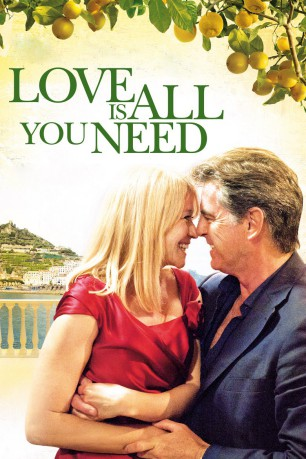

#5161 Love Is All You Need
 
 IMDB-Wertung: 6.6 / 10
IMDB-Wertung: 6.6 / 10  Metascore: 0
Metascore: 0 
Ida hat's nicht leicht. Nachdem sie ihren Mann in flagranti mit "Tilde aus der Buchhaltung" erwischt, muss sie alleine zur Hochzeit ihrer Tochter nach Italien reisen. Bereits am Flughafen stößt sie unsanft mit dem überaus attraktiven, aber ebenso ruppigen Geschäftsmann Philip zusammen, der sich bald als Schwiegervater in spe entpuppt. Und auch sonst läuft bei der Traumhochzeit nichts wie geplant: dem Brautpaar kommen Zweifel, die Schwägerin nervt und Idas Ehemann taucht schließlich mitsamt seiner Affäre auf ...
Jahr: 2012
Dauer: 116 Minuten
FSK: 0
Land: Dänemark Studio: Prokino FilmverleihTonspuren:
Untertitel:
Auflösung: 1080p (1920x816) Größe: 6369 MB
Genre: Komödie, Liebe
Regisseur: Susanne Bier
Drehbuch: Jeff Nathanson
Soundtrack:
Darsteller:
 Trine Dyrholm als Ida
Trine Dyrholm als Ida- Sebastian Jessen als Patrick
- Molly Blixt Egelind als Astrid
- Marco D'Amore als Marco
 Pierce Brosnan als Philip
Pierce Brosnan als Philip Paprika Steen als Benedikte
Paprika Steen als Benedikte- Kim Bodnia als Leif
 Thomas Voss als Wedding Guest
Thomas Voss als Wedding Guest- Stina Ekblad als Female Doctor
- Ciro Petrone als Alessandro
- Line Kruse als Bitten
 Birthe Neumann als Wiebe
Birthe Neumann als Wiebe- Christiane Schaumburg-Müller als Thilde
- Bodil Jørgensen als Vibe
- Christiane Rohde als
- Anne O. Pagh als
- Micky Skeel Hansen als Kenneth
- Frederikke Thomassen als Alexandra
 Rikke Louise Andersson als
Rikke Louise Andersson als - William Salicath als Wedding Guest
- Sebastian Lund als Wedding Guest
- Maria Helena Guggenheim als Wedding Guest
- Simone Nielsen als Wedding Guest
- Philip Zandén als Male Doctor
- Maria Stenz als
- Thomas Jessing als Tourist , uncredited
- Helena Faurbye Løfgren als Sekretær , uncredited
Datei: X:\2012(G-M)\Love Is All You Need (2012, FSK0, 1920x816).mkv seit 27.12.2016
Festplatte: HD 2012(A-M)
 Es gibt insgesamt 112 Filme in der Gruppe '2012(G-M)'
Es gibt insgesamt 112 Filme in der Gruppe '2012(G-M)'